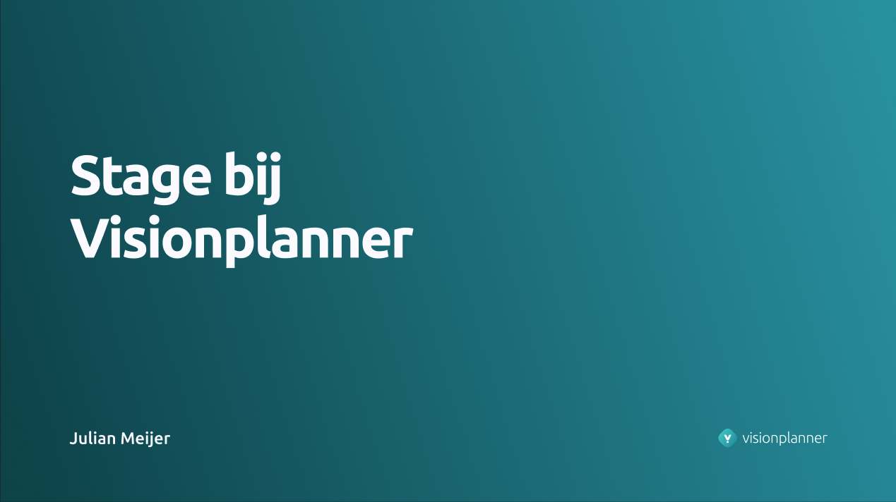

Ik deed onderzoek naar patronen van de gebruiker, wat de gebruiker wil van ons en hoe we die kunnen bereiken.
Tijdens de stage maakte ik veel interactieve prototypes in Figma. Verder was er voor elk ontwerp veel iteraries waar ik vaak feedback voor vroeg.
Ik probeerde zoveel mogelijk de ontwerpen tijdens mijn stage zoveel mogelijk visueel identiek te maken als de huisstijl van Visionplanner.
Ik heb veel prototypes getest met gebruikers en collega's. Ik heb veel feedback gekregen en verwerkt in de ontwerpen.
Tijdens de stage heb ik erg veel geleerd over efficient werken in Figma, werken in een multidisciplinair team, het verwerken van feedback en invidiueel werken aan projecten binnen het bedrijf. Mijn Figma stage portfolio bovenaan deze pagina reflecteert erg goed mijn werk.